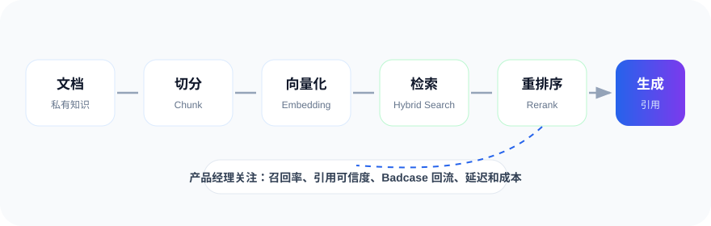

MODULE 00
面试官到底在考什么
面试官手里有一张隐形评分卡。先理解评分逻辑，再开始学习，效率会明显提高。
隐形评分卡
| 考察维度 | 权重 | 面试官在找的信号 | 一票否决项 |
|---|
岗位类型决定考察重点
- 考察侧重
- 面试风格
- 准备建议
面试官视角
转行候选人挂得最多的不是“不懂技术”，而是投错岗位类型。用 C 端应用的准备去面模型产品岗，第一个技术追问就容易崩。先定位，再准备。MODULE 01
AI基础技术认知
面试权重最高面试官不需要你推导公式，但必须能判断三件事：这个需求模型能不能做、做到什么程度、代价多大。

RAG链路是一条产品判断链
不要只把 RAG 当技术名词。切分粒度、召回策略、Rerank、引用呈现、Badcase 回流，每一环都对应产品体验和评估指标。
互动练习：技术选型决策器
模拟面试追问：根据场景回答问题，看看你是否选对了技术路线。
核心概念闪卡
MODULE 02
AI产品方法论
需求分析：AI产品的三重验证
效果兜底设计是 AI 产品 PRD 的必备章节：模型答错时，需要有置信度阈值、降级方案、人工兜底、引用溯源和免责声明。
模型评估与优化
Badcase 分析四步法
面试官视角
我必问：“你怎么知道这个版本比上个版本好？”能答出离线评测集回归、小流量 GSB 人工评测、线上 A/B 三层验证的候选人，会明显拉开差距。MODULE 03
行业应用场景与商业化
四大核心场景，每个准备 1 到 2 个可深聊的案例。点击 Tab 切换查看。
推理成本计算器
估算题重点不在精确，而在链条完整。基础模式建立直觉，高级模式补上输入/输出价格、缓存、模型路由与付费转化。
商业化要点
- 商业模式：订阅、API 按 Token 计费、企业版增值、AI+广告。
- 定价逻辑：成本加成 vs 价值定价；免费额度是转化漏斗的一部分，要算 LTV / CAC。
- B端 vs C端：C 端看规模效应与留存，B 端看交付成本与续费率。
- 合规：国内生成式 AI 产品要重视备案、内容安全审核和数据安全链路。
MODULE 04
跨团队协作能力
行为面必考冲突题
“算法同学说你要的效果做不到，怎么办？”建议四步走：拆解需求、换技术路线、调整产品形态、砍需求并同步 stakeholders。能讲出“调整产品形态”这一层，就是亮点。MODULE 05
面试核心考察点与实战题库
冲刺阶段重点产品设计题七步答题框架
扣分项
直接跳到功能设计，是产品设计题挂掉的第一原因。面试官要看的恰恰是用户、痛点、AI 必要性这三步。高频题库
公司差异化准备
作品集：转行者的胜负手
扣分项
简历写“熟悉大模型原理”但没有任何作品或输出物。面试官通常会默认：没作品等于没动手。MODULE 06
12周学习路线图
每日投入：工作日 2 小时输入 + 周末 4 小时输出。输出大于输入，看十篇文章不如写一份拆解报告。
学习进度
0%
学习清单
FINAL